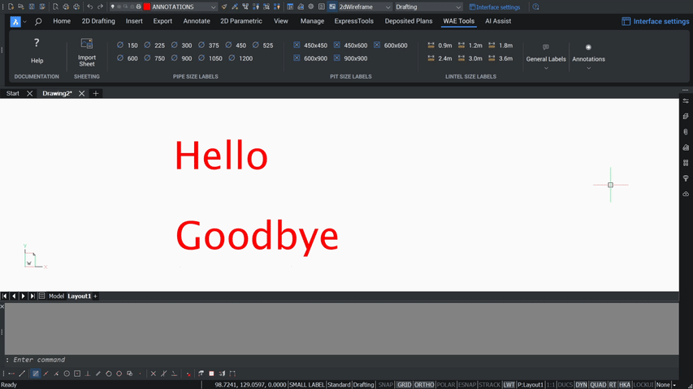

Modify & Flip Text
Two small tools for tidying annotation on a marked-up sheet.

Modify Text
Adds a prefix or suffix to selected text. Run MODTEXT — select the
text first if you like — then Choose [Prefix/Suffix]: and
Enter text for Prefix/Suffix:. Works on text, mtext and multileaders.
Flip Text
FLIPTEXT rotates selected text 180° about its middle centre —
useful when a marked-up sheet is rotated and annotation ends up upside down.
Note — flipping changes the text's justification to middle
centre permanently, so flipping twice doesn't restore the original justification.